Active Directory Integration
DNS lookup integration can be simply done in a few steps. Head to the Whalebone portal -> Resolvers
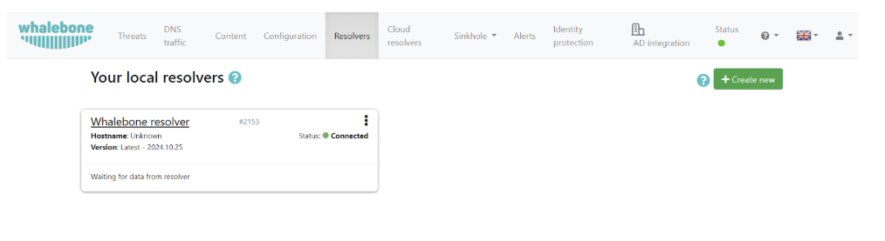Click on the resolver you would like to integrate and then head to the Integrations tab on the left of the page.
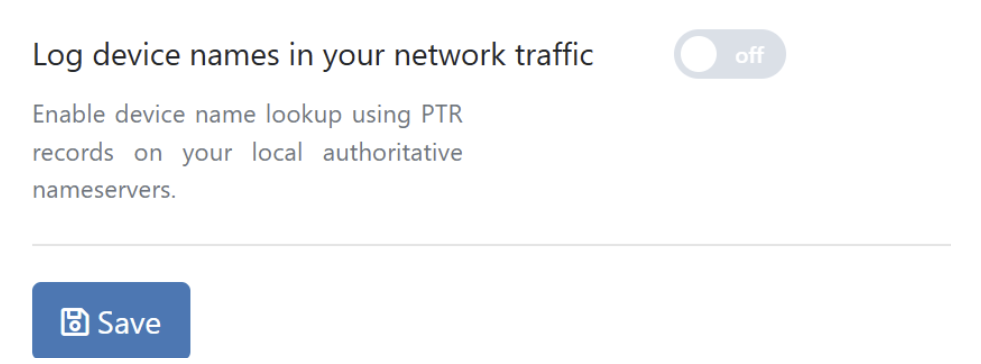Turn the Log device names in your network slider to the On position.
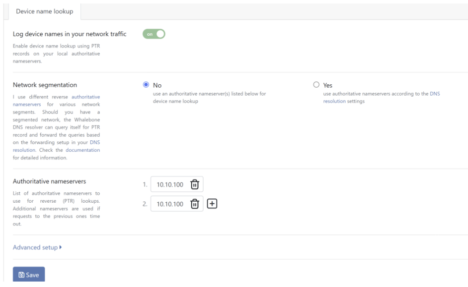Add your Authoritative nameservers
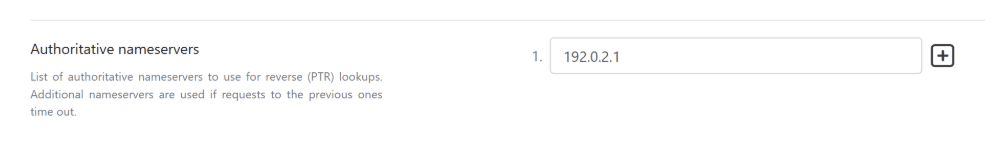If you have multiple controllers you can press on the + sign and add a secondary.
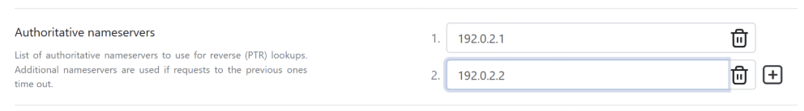If your network is segmented and each IP range or network segment is associated with a different name server, you can leverage the Network segmentation feature.
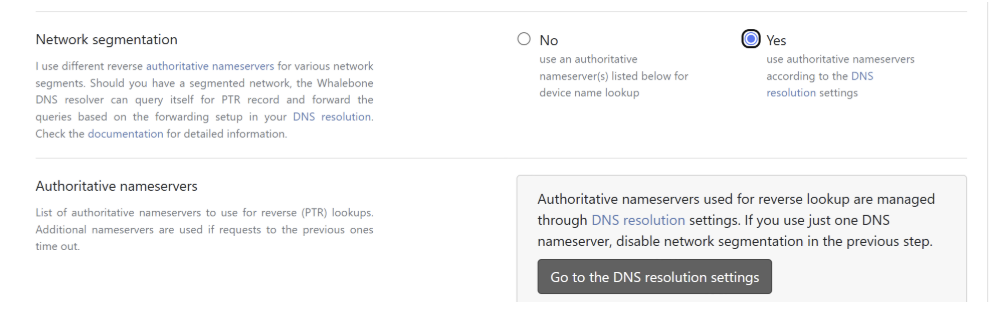By enabling this option, resolver starts to query itself for the PTR records (in order to enrich the logs for the device hostname).
Association of IP ranges with the particular name server is then set up in the DNS resolution settings.
Note: Do not forget that PTR records are entered in the reverse way. See the screenshots below for examples.
This will require you to define specific Name servers for specific domain requests. You can set these up under DNS resolution settings.
Click on the Go to the DNS resolution settings and set up your desired forwarding rules.
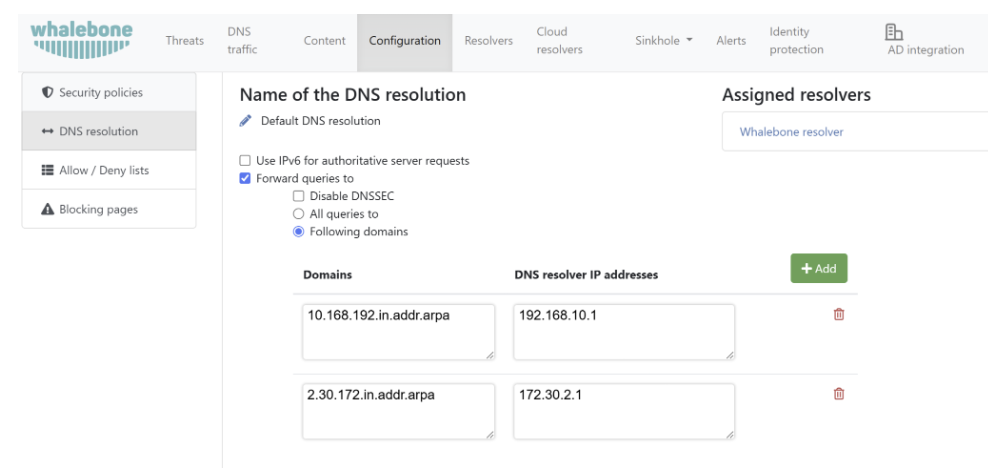In the Advanced setup you can configure specific behaviors.

Defaults are the recommended values, but they can be adjusted to your specific needs. Once satisfied with the settings you can click on the Save button on the bottom of the page to save the configuration. The settings will still need to be applied on the resolver as indicated by the message that will pop up at the top of the page.
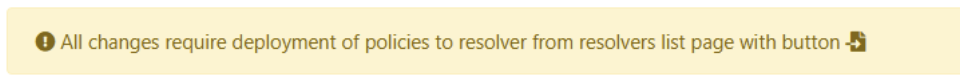Head back to the Resolvers page and apply the configuration on the resolver by pressing the apply configuration button next to your resolver.
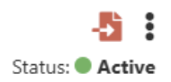What is a PTR record? A PTR (Pointer) record is a type of DNS record used to map an IP address to a domain name, essentially performing a reverse DNS lookup. Unlike A or AAAA records, which resolve domain names to IP addresses, a PTR record provides the human-readable domain name associated with a given IP address. PTR records are commonly used for: Email servers: Ensuring proper reverse DNS resolution for spam filtering. Network troubleshooting: Identifying hosts by domain names instead of just IP addresses. Logging and monitoring: Making logs more readable by showing domain names instead of raw IP addresses. How the DNS Resolver Enriches Logs DNS resolvers can enrich log data by performing reverse DNS lookups on queried IP addresses. This means that if an IP address appears in a DNS query or response, the resolver may try to resolve its PTR record to display a domain name in the logs. This enrichment helps by: Providing better context in logs (e.g., showing example.com instead of 192.168.1.10). Enhancing security monitoring by making it easier to recognize malicious domains. Simplifying troubleshooting when analyzing traffic patterns. Important Note: PTR records are not visible in the DNS traffic logs. The resolver performs reverse lookups separately from the actual DNS queries made by clients. This means that while the logs may display domain names for certain IP addresses, those lookups are not part of the original DNS transaction.
Secondary method
Before you install and Event Log Forwarer (ELF) on one or more of your devices, please ensure that you have enabled audit of events.
On each of your Domain Controllers (DC) go to:
Windows Administrative Tools → Local Security Policy, and then
Security Settings → Local Policies → Audit Policy, and there find
Audit account logon events, Audit account sign-in events and Audit logon events.
Some settings may differ in name or be missing, based on your Windows version.
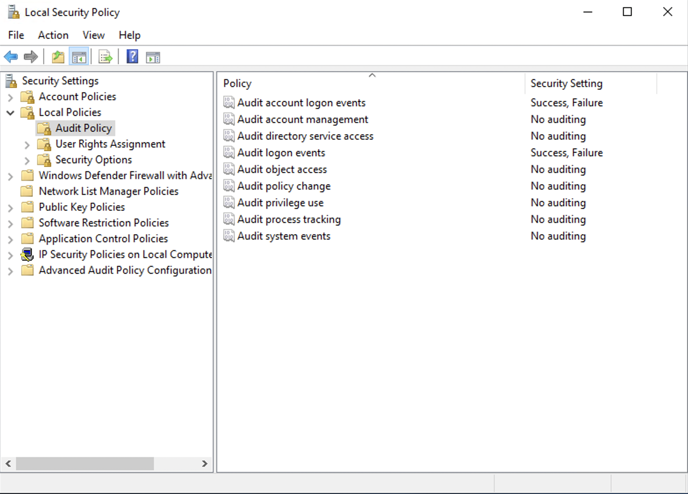Check both Success and Failure boxes.
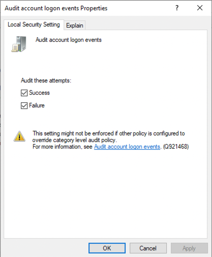You may need to reload configured policy. To reload policy, please run following command:
gpupdate /force
Domain Controller Configuration
DC Firewall on Windows
Ensure that Event Log can be accessed through your Firewall configuration using WMI.
On each of your Domain Controllers go to:
Windows Defender Firewall → Windows Defender Firewall with Advanced Security on Local Computer
Inbound Rules → Windows Management Instrumentation (WMI-In)
ensure the rule allows connections
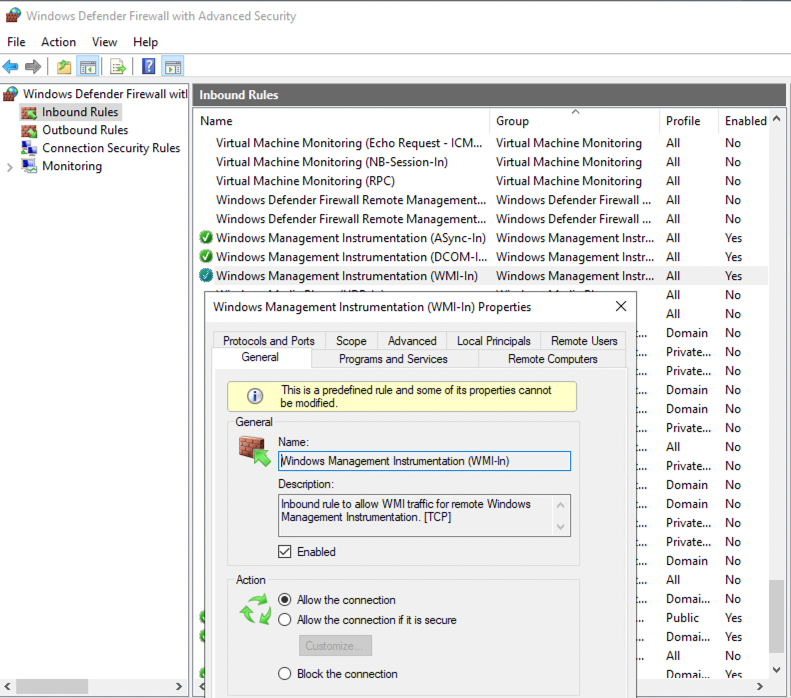set up a scope of allowed addresses that may connect. In this example a remote address 192.168.1.0/24 is allowed.
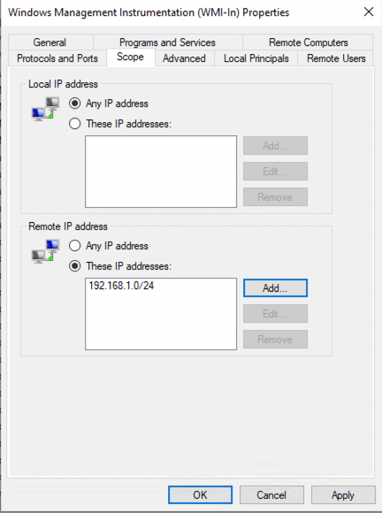Or, alternatively you can use command line:
netsh firewall set service RemoteAdmin enable
DC Firewall Rules
Source |
Direction |
Destination |
Port |
Protoocol |
Reason |
|---|---|---|---|---|---|
DC |
—> |
local netwk |
135 |
TCP/UDP |
Microsoft RPC |
DC |
—> |
local netwk |
445 |
TCP |
Microsoft MQ |
DC |
—> |
local netwk |
ICMP |
Windows Service
Please ensure that Windows Management Instrumentation service is running.
C:\Users\Administrator>sc query Winmgmt
SERVICE_NAME: Winmgmt
TYPE : 30 WIN32
STATE : 4 RUNNING
(STOPPABLE, PAUSABLE, ACCEPTS_SHUTDOWN)
WIN32_EXIT_CODE : 0 (0x0)
SERVICE_EXIT_CODE : 0 (0x0)
CHECKPOINT : 0x0
WAIT_HINT : 0x0
WMI Remote Configuration
If you chose to install ELF on another Windows PC, ensure that it can use WMI remotely. To enable Remote WMI for the account which will be used to connect to Domain Controller, go to:
Computer Management → Services and Applications → WMI Control
Right click on it and selet Properties
Select Security tab, then choose the Root namespace and hit Security button.
Add user to the list or select a group it belongs to, check Remote Enable permission.
Event Log Forwarder
You can install ELF locally on the DC or on another Windows PC. ELF uses following connections:
ELF Firewall Rules
Source |
Direction |
Destination |
Port |
Protoocol |
Reason |
|---|---|---|---|---|---|
ELF |
—> |
DC |
135 |
TCP/UDP |
|
ELF |
—> |
resolver |
4222 |
TCP |
NATS Message Queue |
Install Instructions
Install or Update:
msiexec /i "Whalebone.Event.Log.Forwarder.Installer.msi" ui="true"
Uninstall:
msiexec /x "Whalebone.Event.Log.Forwarder.Installer.msi
Configuration Instructions
Installer shall open configuration Window automatically. You may access configuration from favourite web browser using command:
start http://localhost:55225/Configure/AD
Service Logs
Service logs can be found at c:\ProgramData\Whalebone\Event Log Forwarder\, which contain detailed information about service state. In case you encounther unexpected service behaviour please include this folder along inside your support ticket.